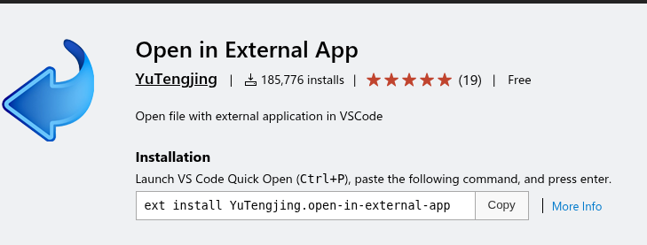
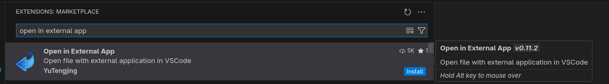
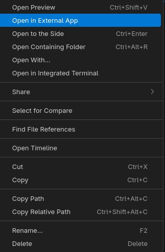

VSCodium: Easily Open Files in External Applications
This blog post explains how you can use the Open in External App extension for Microsoft Visual Studio Code and open source VSCodium to open files in external applications rather than the Visual Studio Code or VSCodium text editor.
I've started writing something like another book. In the past, I always preferred Microsoft Word for writing, but in 2025 I'm doing my best to move away from big tech, and honestly Word can be cumbersome for long documents. I've migrated to LibreOffice, but that has its own challenges. In fact, markdown meets most of my requirements, and I prefer smaller text files to larger binary files.
VSCodium is something like an open source version of Visual Studio Code without the Microsoft telemetry, tracking, and "Artificial Intelligence" (AI) hooks.
- Microsoft Visual Studio Code: https://code.visualstudio.com/
- VSCodium: https://vscodium.com/
- Open in External App: https://marketplace.visualstudio.com/items?itemName=YuTengjing.open-in-external-app
I use VSCodium to edit the files. I maintain a tree of markdown files in a github project (I know, this lets AI read my files, but at least I have versioning and backups without depending on local storage, and in the end, I don't really care anyway).
By default, when I open a markdown (.md) file in VSCodium, the application opens the file in its relatively simple text editor. This actually works very well, but sometimes I want some features of a real word processor, such as spellcheck, rather than editing in the VSCodium text editor.
In the file tree in VSCodium, I can right-click a file and choose to edit it in an external application, but then I have to select the application, which is a bit of a hassle. There is an easier way, assuming that I can trust the source.
- In VSCodium, press
Ctrl+Shift+xto access the Extensions Marketplace (or select the View menu and then select Extensions). - In the panel that appears, type
open in external app. - Find Open in External App and click Install.

Return to the file tree, right-click on an .md file, and select Open in External App.

I'm too lazy to figure out how to reset my configuration to its original state, so I can't describe how to configure it to open .md files in LibreOffice Writer, but VSCodium now opens .md files in LibreOffice Writer when I right-click them and select Open in External App from the context menu. I think there was a dialog that let me easily select my preferred application when I first selected this option.
Note: if you have edited the file in VSCodium, save it before opening it in the external editor.